Making 2D Hilbert Curve
Zuguang Gu (z.gu@dkfz.de)
2024-09-10
Source:vignettes/hc_general.Rmd
hc_general.RmdIntroduction
Hilbert curve is a type of space-filling curves that folds one dimensional axis into a two dimensional space, but still keeps the locality. It has advantages to visualize data with long axis in following two aspects:
- greatly improve resolution of the visualization fron \(n\) to \(\sqrt{n}\);
- easy to visualize clusters because generally data points in the axis will also be close in the 2D space.
This package aims to provide an easy and flexible way to visualize data through Hilbert curve. The implementation and example figures are based on following sources:
- http://mkweb.bcgsc.ca/hilbert/
- http://corte.si/posts/code/hilbert/portrait/index.html
- http://bioconductor.org/packages/devel/bioc/html/HilbertVis.html
We first load the packages and set seed for random numbers.
library(HilbertCurve)
library(circlize)
set.seed(12345)Following plots show Hilbert curves with level 2, 3, 4, 5:
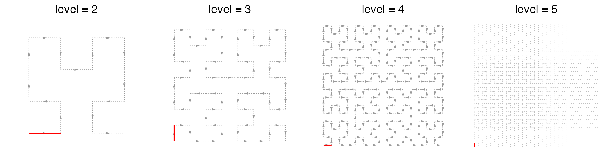
As shown in the above plots, as level increases, the length of the curve becomes longer and the curve folds more densely. The number of segments (one segment is marked in red) on the Hilbert curve is 4^level - 1. If a Hilbert curve with level 11 is used to map to human chromosome 1, the resolution would be 249250621/4^11 (approximately 59bp per segment).
Locality
Hilbert curve folds one-dimensional axis into a two-dimensional space while still preserves the locality of the data points. We visualize this attribute with a Hilbert curve with level 5. In following animation, the point moves with its natural order on the axis.
for(i in 1:1024) {
hc = HilbertCurve(1, 1024, level = 5, reference = TRUE, arrow = FALSE, legend = FALSE)
hc_points(hc, x1 = i, np = NULL, pch = 16, size = unit(2, "mm"))
}
Next, we calculate the pairwise distance between data points in the 2D space and visualize it as heatmap. The numbers on x-axis (top) and y-axis (left) illustrate the position of data points in the original 1D axis.
library(HilbertVis)
pos = HilbertVis::hilbertCurve(5)
mat = as.matrix(dist(pos))
library(ComplexHeatmap)
ht = Heatmap(mat, name = "dist", cluster_rows = FALSE, cluster_columns = FALSE,
show_row_names = FALSE, show_column_names = FALSE,
heatmap_legend_param = list(title = "euclidean_dist"))
draw(ht, padding = unit(c(5, 5, 5, 2), "mm"))
decorate_heatmap_body("dist", {
grid.segments(c(0.25, 0.5, 0.75, 0, 0, 0), c(0, 0, 0, 0.25, 0.5, 0.75),
c(0.25, 0.5, 0.75, 1, 1, 1), c(1, 1, 1, 0.25, 0.5, 0.75), gp = gpar(lty = 2))
grid.text(rev(c(256, 512, 768, 1024)), 0, c(0, 256, 512, 768)/1024, just = "bottom",
rot = 90, gp = gpar(fontsize = 10))
grid.text(c(1, 256, 512, 768, 1024), c(1, 256, 512, 768, 1024)/1024, 1, just = "bottom",
gp = gpar(fontsize = 10))
})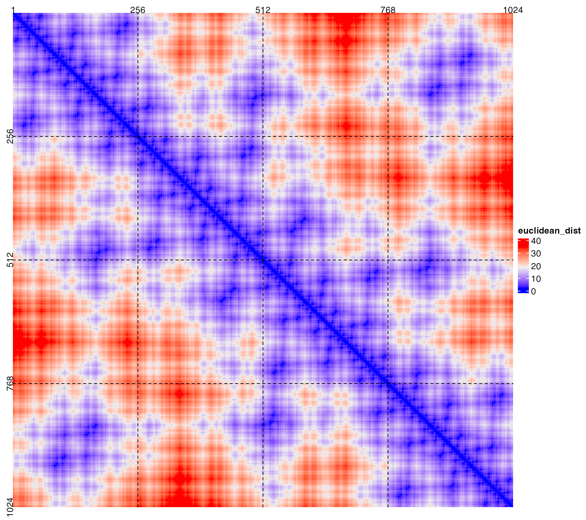
Basically, from the heatmap, data points which are close in the 1D axis are still close in the 2D space (illustrated in the areas around diagonals).
Also there are some data points in (e.g, 1 ~ 256) which are close to data points in (768 ~ 1024)(bottom left or top right area in the heatmap), but it is only due to that the curve folds back. This exception can be easily distinguished by adding assistant grid lines or if users are clear with the structure of the curve.
Basic settings
The HilbertCurve package provides a rather simple way to display the data in the form of Hilbert curve. It hides all the technical parts and users only need to think that they are adding graphics on a novel axis based on specifying positions.
Generally, customizing a Hilbert curve follows following steps:
hc = HilbertCurve(...) # initialize the curve
hc_points(hc, ...) # add points
hc_rect(hc, ...) # add rectangles
hc_polygon(hc, ...) # add polygons
hc_segments(hc, ...) # add lines
hc_text(hc, ...) # add textHilbertCurve() is a constructor function and initializes the Hilbert curve. Following example means initializing a Hilbert curve with level 4 which maps data ranging from 1 to 100. The function returns a HilbertCurve class instance and it can be used to add more graphics later.
reference argument here is only used to show the structure of the curve.
hc = HilbertCurve(1, 100, level = 4, reference = TRUE)By default, the Hilbert curve starts from the bottom left corner. The start position can be specifyed by start_from option and the orientation of the first segment can be set by first_seg:
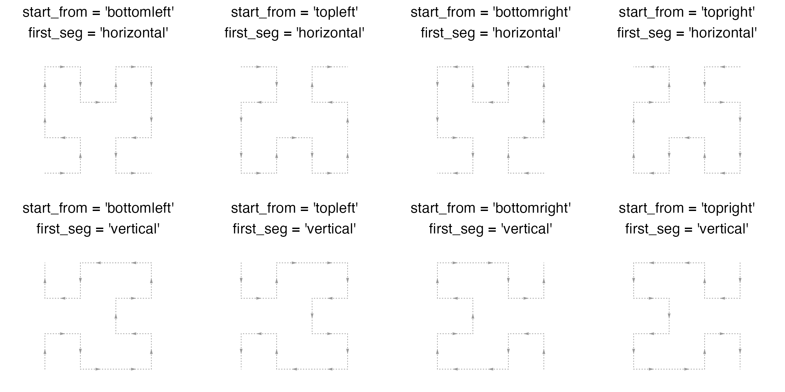
The curve can be though as a folded axis. When the coordinate for this folded axis is initialized, low-level graphics can be added by specifying the positions.
There are several ways to specify the “positions” of the data points. The most common way is to construct a IRanges object:
## IRanges object with 10 ranges and 0 metadata columns:
## start end width
## <integer> <integer> <integer>
## [1] 2 10 9
## [2] 14 24 11
## [3] 32 38 7
## [4] 39 40 2
## [5] 51 58 8
## [6] 75 80 6
## [7] 81 86 6
## [8] 87 88 2
## [9] 90 92 3
## [10] 93 96 4Here ir contains intervals which are composed by integers. In later sections, you will see it is also possible to specify positions with numeric values and very large values.
Points
There are two modes for adding points. Normally, intervals are always long in the curve and can not be sufficiently represented by single points, thus, by default, a list of e.g. circles compose the intervals.
hc = HilbertCurve(1, 100, level = 4, reference = TRUE)
hc_points(hc, ir)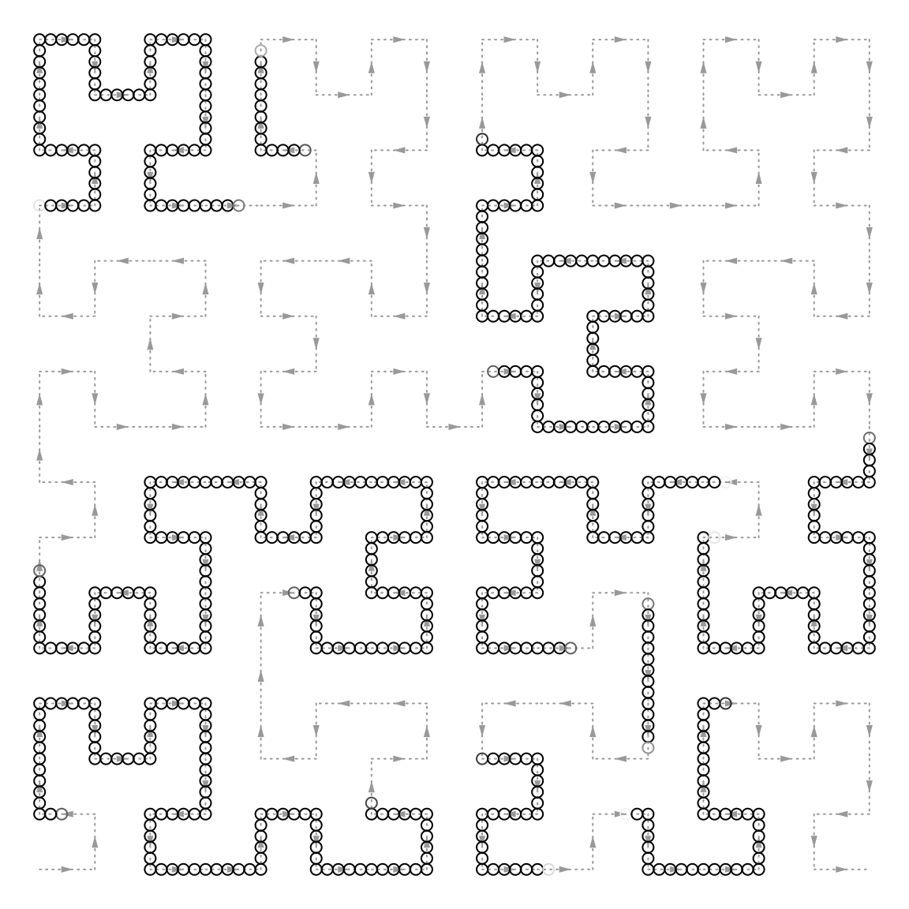
The number of circles used to represent the intervals can be controlled by np (number of points per segment). np controls number of tiny segments that split every Hilbert curve segment (e.g. the first horizontal segment in the left bottom in the curve). Following plot is under np = 3.
hc = HilbertCurve(1, 16, level = 2, reference = TRUE, title = "np = 3")
hc_points(hc, x1 = 1, x2 = 2, np = 3)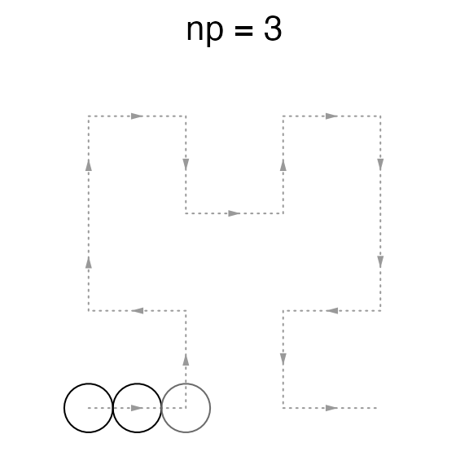
Graphic parameters can be set by gp. Note under this mode, the size of points can only be controlled by np argument. To make it more interesting, you can choose different shapes for the points. There are some pre-defined shapes that you can choose from: “circle”, “square”, “triangle”, “hexagon”, “star”.
hc = HilbertCurve(1, 100, level = 4, reference = TRUE)
hc_points(hc, ir, np = 3, gp = gpar(fill = rand_color(length(ir))),
shape = sample(c("circle", "square", "triangle", "hexagon", "star"), length(ir), replace = TRUE))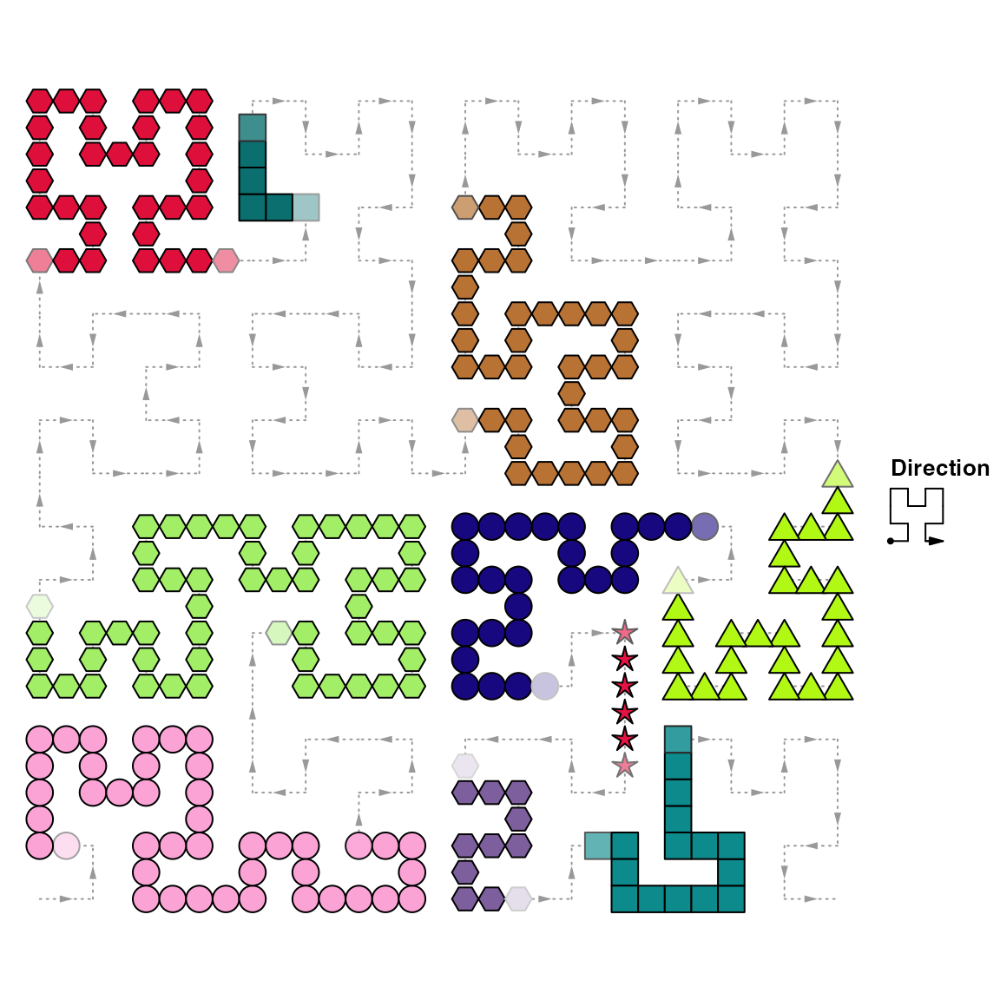
In above figure, you may notice for some points, the color is more light in the ends. This is because the segments represented by these light circles are not fully covered by user’s input intervals, thus, averaging is applied here. E.g. if only the half of the segment represented by the circle is covered by user’s interval and the color for this circle is set to red, then after the averaging, the color would be semi-red (#FF8080, an average between red and white). Averaging is very important when you visualize the genome with zooming. You can find more detailed explanation in the Averaging section.
If np is set to 1 or NULL, there will be second mode for adding points that the points are plotted at the center of every interval in ir. In this case, size argument is used to control the size of the points. This mode is useful if you have a lot of small intervals.
hc = HilbertCurve(1, 100, level = 4, reference = TRUE)
hc_points(hc, ir, np = NULL, size = unit(runif(length(ir)), "cm"), pch = 16)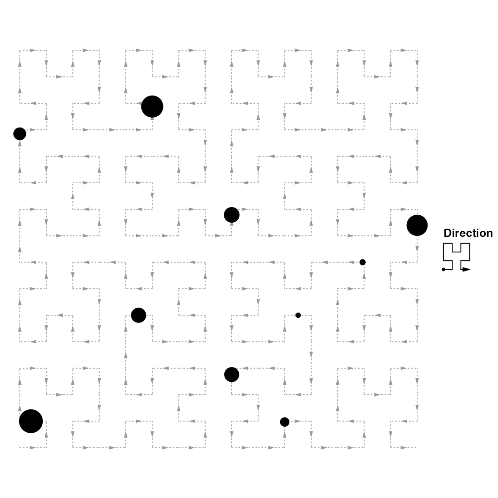
Segments
Adding segments is quite straightforward. You can assign lwd to a large value to simulate long and twisted rectangles.
hc = HilbertCurve(1, 100, level = 4, reference = TRUE)
hc_segments(hc, ir, gp = gpar(lwd = 5))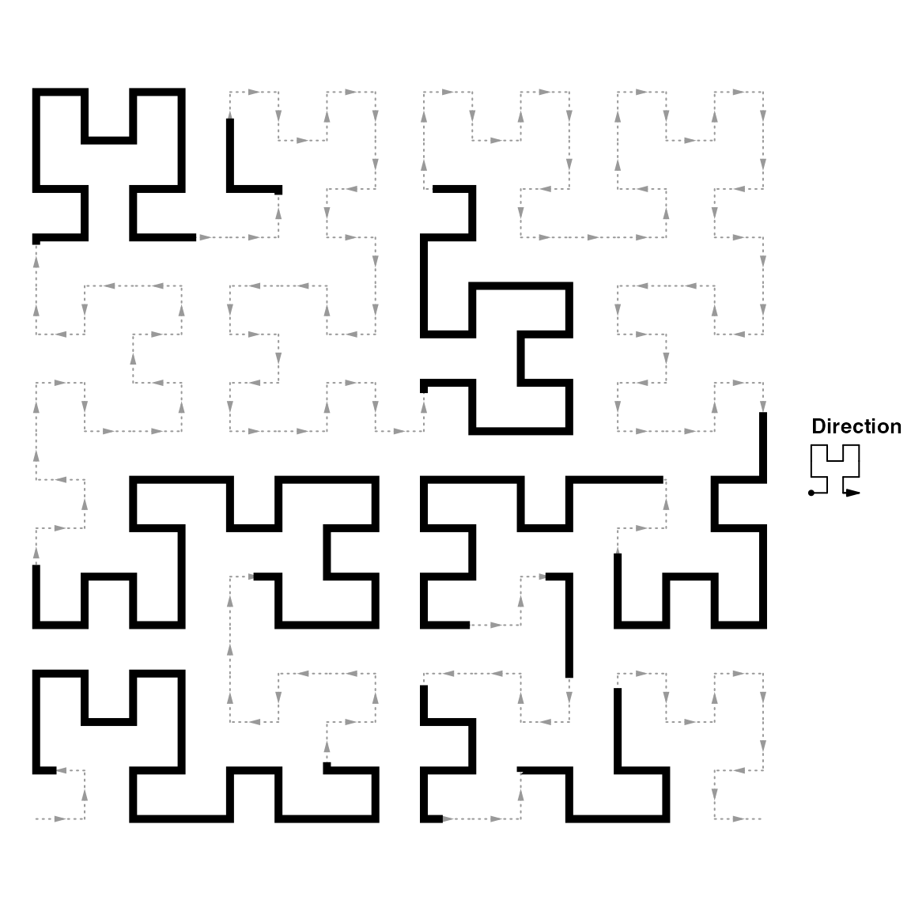
Rectangles
hc_rect() fills intervals by a list of squares. The squares always locate at the turning points of the Hilbert curve and the width/height cannot be modified and it is automatically adjusted according to the level of the curve.
There is a difference from hc_points() with setting shape to square. The number of squares per segment is always 2 for hc_rect() while it can be any number for hc_points(). When the interval is long enough, hc_rect() can completely fill the surrounding areas.
hc = HilbertCurve(1, 100, level = 4, reference = TRUE)
hc_rect(hc, ir, gp = gpar(fill = "#FF000080"))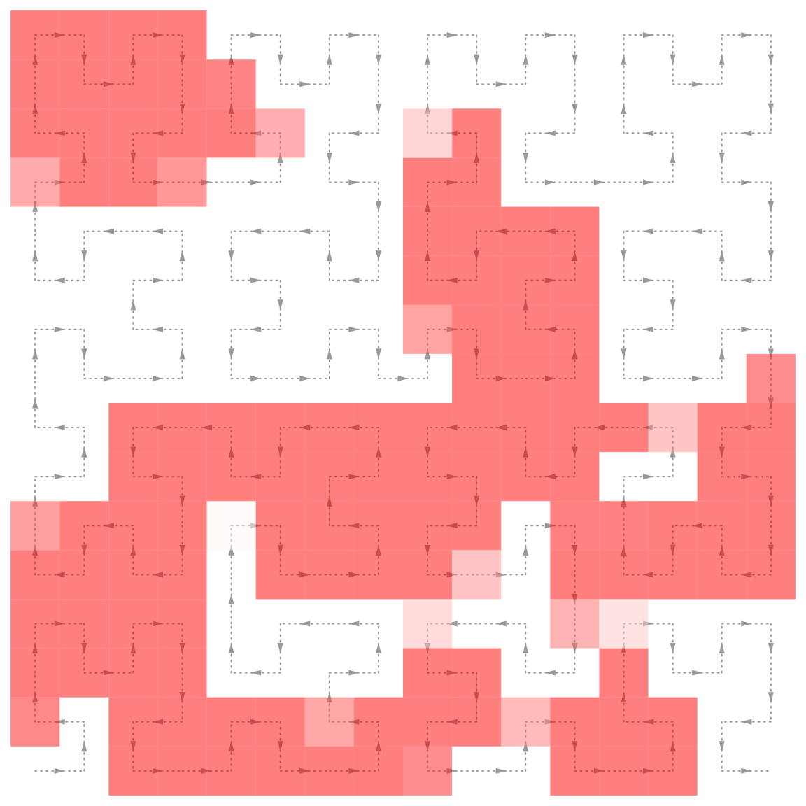
As you can see some rectangles are not full red as well. It is also because of averaging. See Averaging sections for explanation.
Polygons
Basically polygons are quite similar to the rectangles. The major difference is 1. borders can be set for irregular polygons; 2. there is only single color in one polygon while for rectangles, the color can change in the ends of the interval if the corresponding segment is not completely covered by the input interval.
hc = HilbertCurve(1, 100, level = 4, reference = TRUE)
hc_polygon(hc, ir, gp = gpar(fill = "red", col = "black"))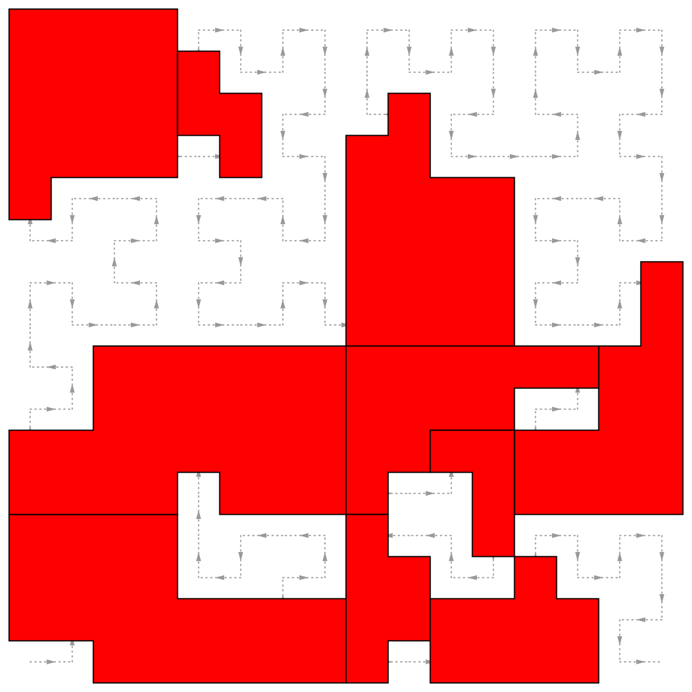
Text
Text by hc_text() is always added at the center of each interval in ir. Additional settings such as just and rot can also be set.
hc = HilbertCurve(1, 100, level = 4, reference = TRUE)
labels = sample(letters, length(ir), replace = TRUE)
hc_text(hc, ir, labels = labels, gp = gpar(fontsize = width(ir)*2+5))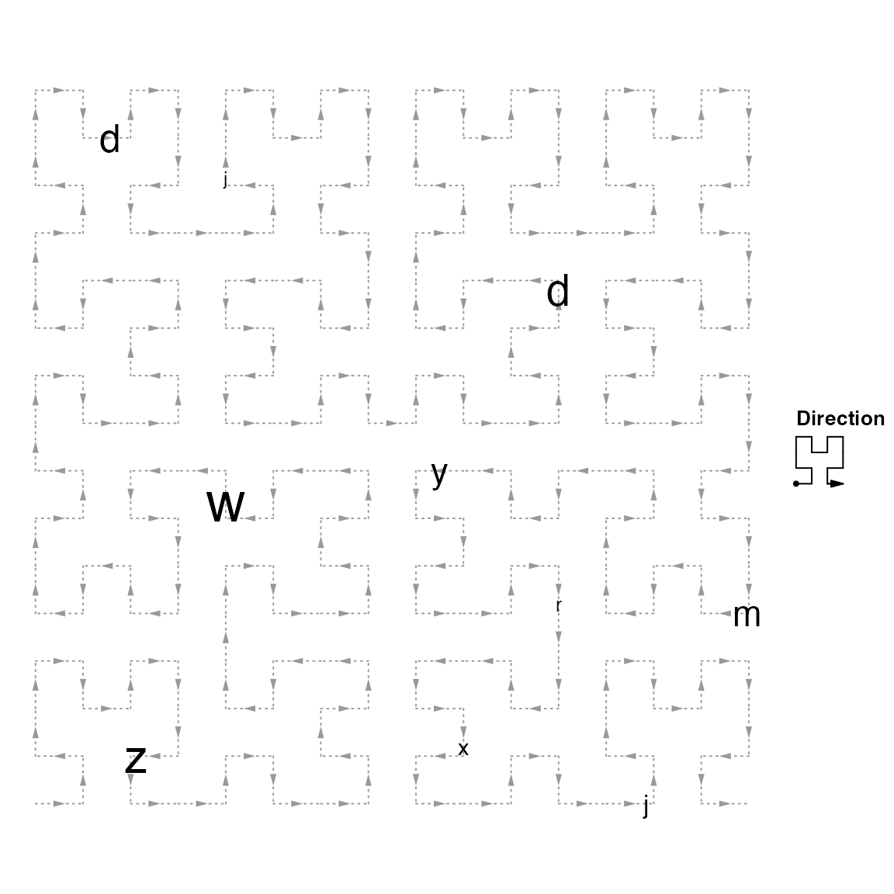
When the intervals are long or when there are polygons representing the intervals, it is better to put text in the visual center of the polygons. For this, centered_by argument can be set to polygon. Compare postions of a and b in following plot:
hc = HilbertCurve(1, 100, level = 4, reference = TRUE)
hc_polygon(hc, ir)
hc_text(hc, ir, labels = "a")
hc_text(hc, ir, labels = "b", centered_by = "polygon")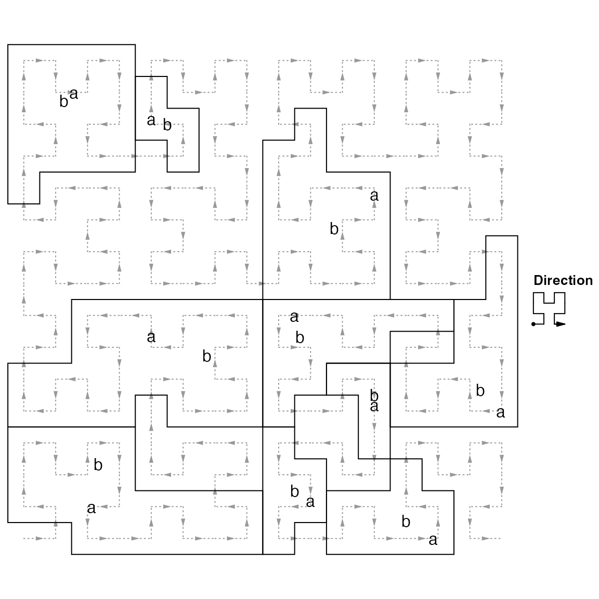
This functionality is used to add chromosome names to the Hilbert curve.
Combine low-level functions
With combination of these basic low-level graphic functions, complicated graphics can be easily made:
hc = HilbertCurve(1, 100, level = 4)
hc_segments(hc, IRanges(1, 100)) # This is an other way to add background line
hc_rect(hc, ir, gp = gpar(fill = rand_color(length(ir), transparency = 0.8)))
hc_polygon(hc, ir[c(1,3,5)], gp = gpar(col = "red"))
hc_points(hc, ir, np = 3, gp = gpar(fill = rand_color(length(ir))),
shape = sample(c("circle", "square", "triangle", "hexagon", "star"), length(ir), replace = TRUE))
hc_text(hc, ir, labels = labels, gp = gpar(fontsize = width(ir)*2+5, col = "blue", font = 2))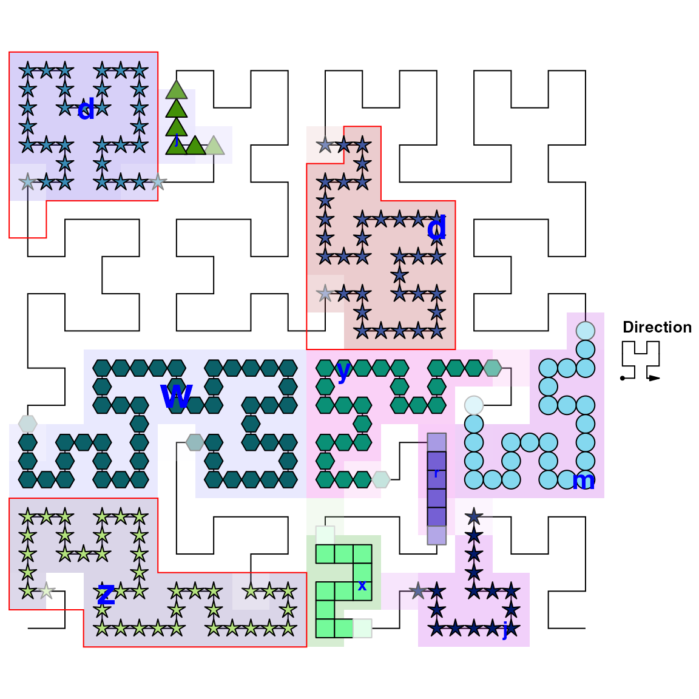
Non-integer positions
It doesn’t matter if your positions are integers or not. Internally, adjustment is automatically applied.
When positions are not integers, you can specify the positions by x1 and x2. All low-level graphical funtions accept x1 and x2.
hc = HilbertCurve(0.1, 0.8, level = 4, reference = TRUE)
hc_points(hc, x1 = c(0.15, 0.55), x2 = c(0.25, 0.65))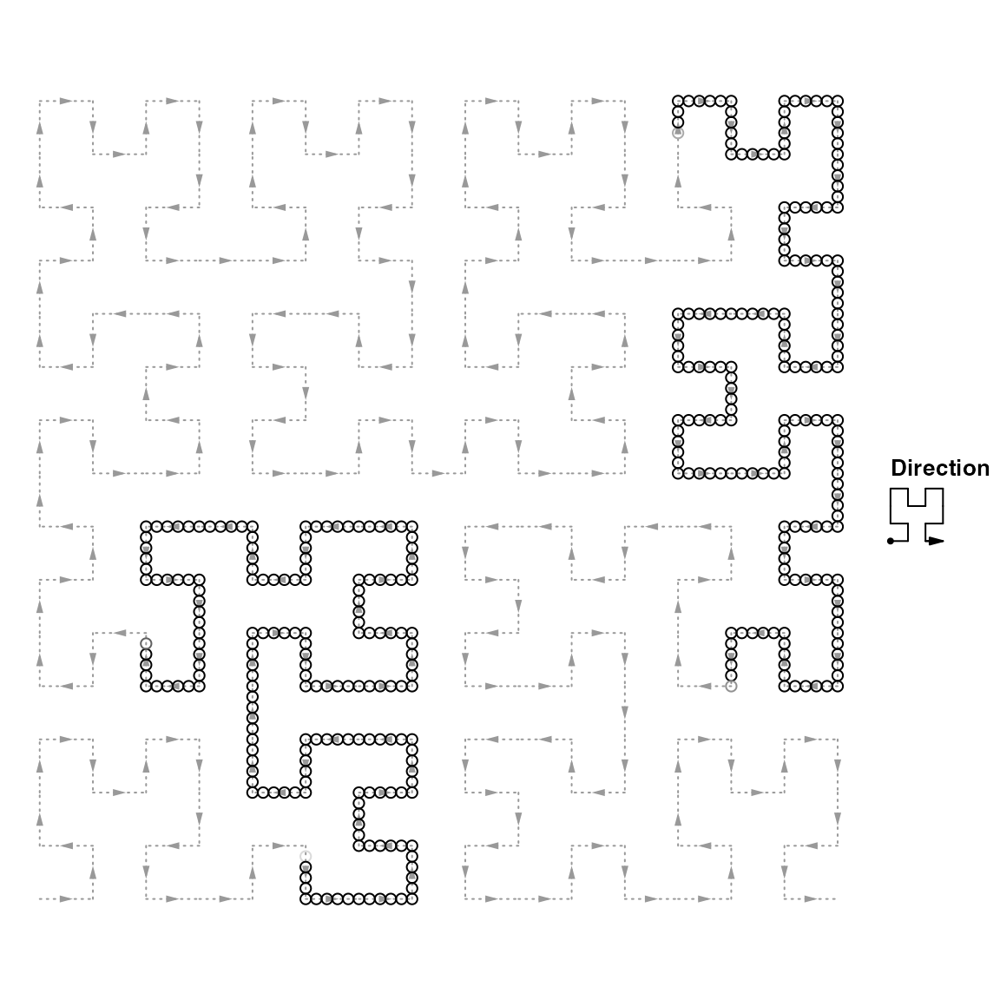
This is also useful to specify the positions with huge integers which can not be handled by the IRanges class (e.g. the summation of total length of human chromosomes).
# code not run when generating the vignette
hc = HilbertCurve(1, 1000000000000, level = 4, reference = TRUE)
hc_points(hc, x1 = 400000000000, x2 = 600000000000)Negative positions are allowed as well.
# code not run when generating the vignette
hc = HilbertCurve(-100, 100, level = 4, reference = TRUE)
hc_points(hc, x1 = -50, x2 = 50)Pixel mode
The pixel mode can be thought as a high resolution version of hc_rect(). When the level is high (e.g. > 10), the whole 2D space will be almost completely filled by the curve and it is impossible to add or visualize e.g. points on the curve. In this case, the ‘pixel’ mode visualizes each tiny ‘segment’ as a pixel and maps values to colors. Internally, the whole plot is represented as an RGB matrix and every time a new layer is added to the plot, the RGB matrix will be updated according to the color overlay. When all the layers are added, normally a PNG figure is generated directly from the RGB matrix. So the Hilbert curve with level 11 will generate a PNG figure with 2048x2048 resolution. This is extremely useful for visualize genomic data. E.g. If we make a Hilbert curve for human chromosome 1 with level 11, then each pixel can represent 60bp (249250621/2048/2048) which is of very high resolution.
Under ‘pixel’ mode, every time a new layer is added, the image is added to the interactive device as a rastered image.
hc = HilbertCurve(1, 100, level = 9, mode = "pixel")
hc_layer(hc, ir)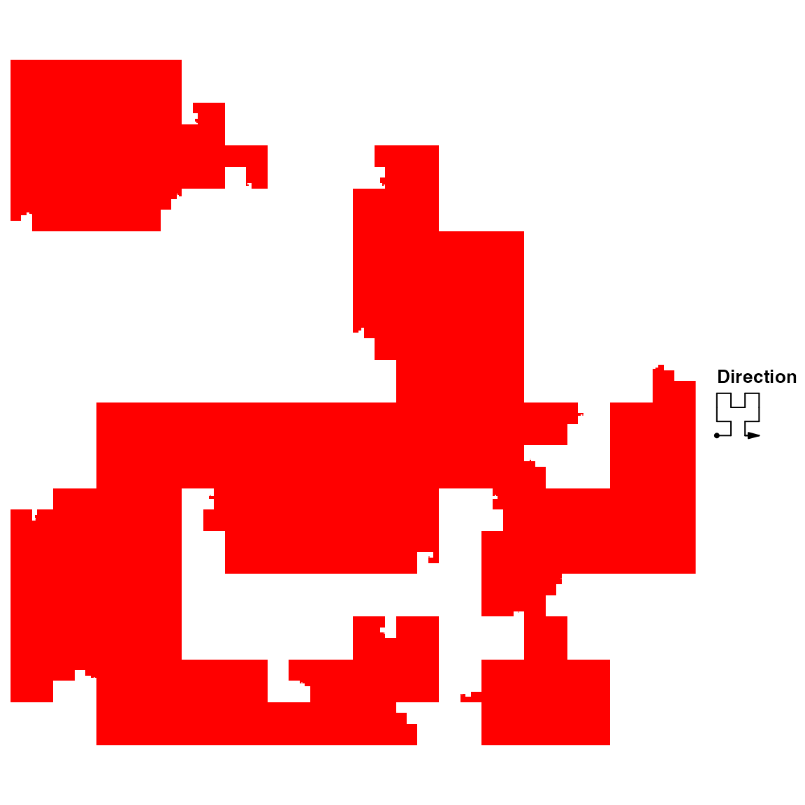
Since color is graphic representation to values, there is only one graphic setting col. You can add more than one layers, and just remember to set transparent colors for the additional layers.
To map values to colors, users can try colorRamp2() function in circlize package to generate a color mapping function. Another advantage of using colorRamp2() is it can be used to generate the corresponding color legend.
col_fun = colorRamp2(c(0, 1), c("white", "red"))
x = seq(10, 960, length = 100)
x1 = x# start of each interval
x2 = x + 2 # end of each interval
value = runif(100) # associated values
hc = HilbertCurve(1, 1000, level = 9, mode = "pixel", title = "pixel mode")
hc_layer(hc, x1 = x1, x2 = x2, mean_mode = "absolute", col = col_fun(value))
hc_layer(hc, x1 = 750, x2 = 850, col = "#00000010")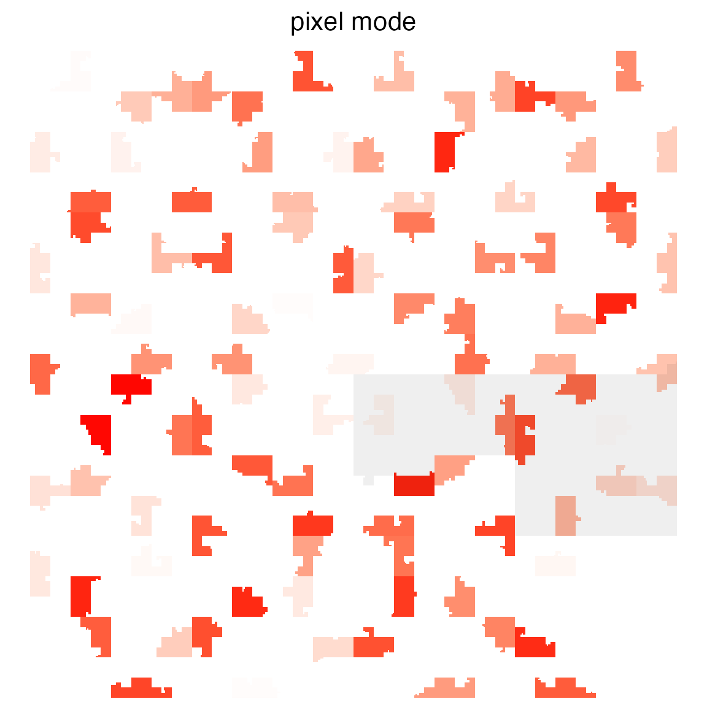
Grid lines can be added to the plot for better distinguishing blocks in the Hilbert curve. The 2D space will be split into 2^(grid_line-1) rows and 2^(grid_line-1) columns.
hc = HilbertCurve(1, 1000, level = 9, mode = "pixel", title = "pixel mode")
hc_layer(hc, x1 = x1, x2 = x2, mean_mode = "absolute", col = col_fun(value), grid_line = 3)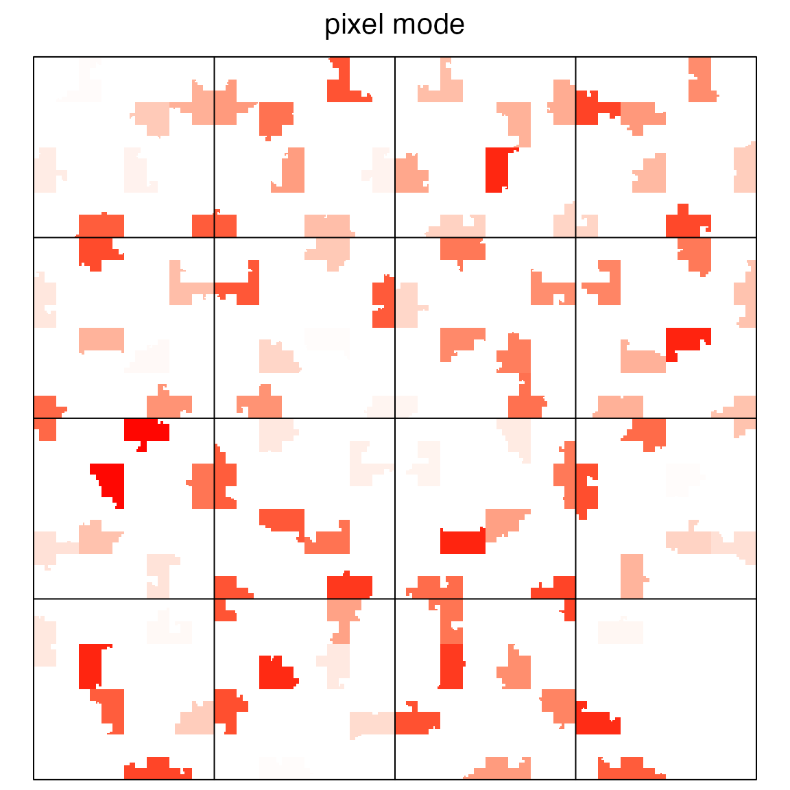
Borders can be added by setting border to TRUE or a vector of colors to distinguish different intervals.
hc = HilbertCurve(1, 1000, level = 9, mode = "pixel", title = "pixel mode")
hc_layer(hc, x1 = x1, x2 = x2, mean_mode = "absolute", col = col_fun(value), border = TRUE)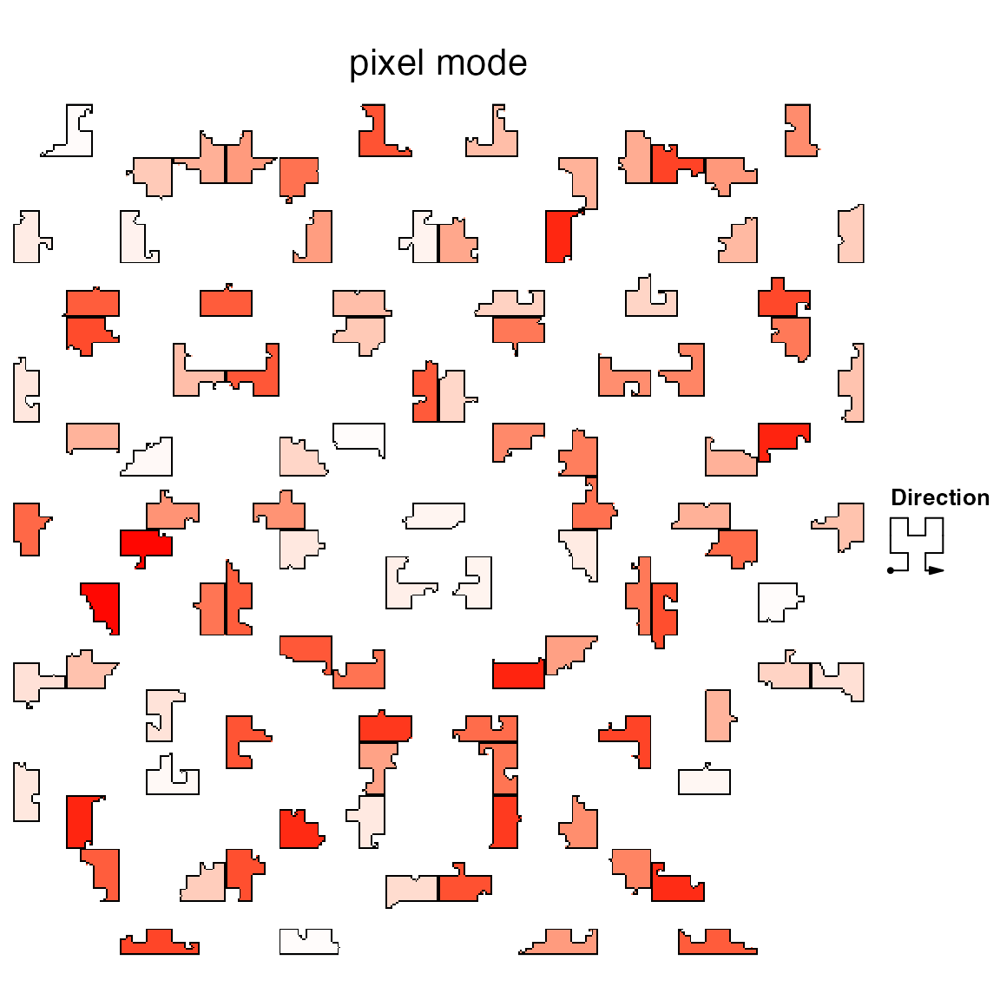
Setting border argument in hc_layer directly modifies the RGB matrix. It adds one pixel border for each polygon and sometimes the border dispears when compressing the image. It is more suggested to add borders by hc_polygon():
hc = HilbertCurve(1, 1000, level = 9, mode = "pixel", title = "pixel mode")
hc_layer(hc, x1 = x1, x2 = x2, mean_mode = "absolute", col = col_fun(value))
hc_polygon(hc, x1 = x1, x2 = x2)
For the low-level graphic functions introduced before, only hc_polygon() and hc_text() can work for pixel mode. E.g. hc_polygon() draws partitions and hc_text() adds labels for the partitions.
hc = HilbertCurve(1, 1000, level = 9, mode = "pixel", title = "pixel mode")
hc_layer(hc, x1 = x1, x2 = x2, mean_mode = "absolute", col = col_fun(value))
hc_polygon(hc, x1 = c(1, 200, 500), x2 = c(200, 500, 1000))
hc_text(hc, x1 = c(1, 200, 500), x2 = c(200, 500, 1000),
labels = c("A", "B", "C"), gp = gpar(fontsize = 20), centered_by = "polygon")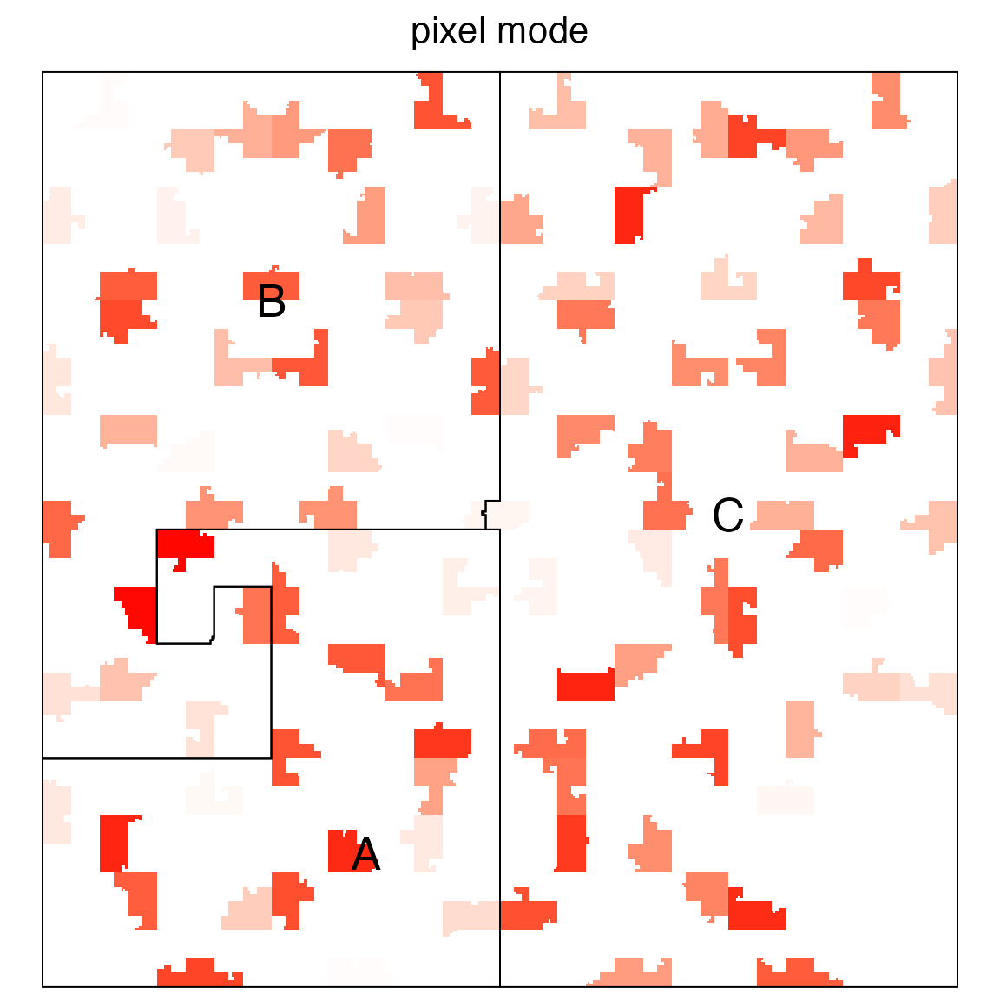
The Hilbert curve can be save as a PNG figure by hc_png() with resolution 2^level x 2^level. Note only the curve itself not including the graphics by hc_polygon()/hc_text() is exported.
# code not run, only for demonstration
hc_png(hc, file = "test.png")Color overlay
As discussed before, under “pixel” mode, the Hilbert curve is stored in an RGB matrix, every time a new layer is added, the RGB values that correspond to the new input intervals will be updated according to the color and transparency of the new layer.
By default, the color overlay for layers is applied based on the transparency of the new layer. Under “pixel” mode, each pixel is represented by red, green and blue colors for which the value is between 0 and 1. When a new layer with transparency color is added, the overlayed RGB is calculated as follows (r0, g0 and b0 correspond to the layer which is already added, r, g, b and alpha correspond to the layer which is going to be added). The method is implemented in default_overlay() function.
r = r*alpha + r0*(1-alpha)
g = g*alpha + g0*(1-alpha)
b = b*alpha + b0*(1-alpha)Insteading of globally controlling the color overlay, hc_layer() provides an overlay argument for which users can specificly control the color overlay in the regions that the input invervals cover. In following example, we change the red regions which are overlapped with the blue regions to green.
hc = HilbertCurve(1, 1000, level = 9, mode = "pixel", title = "pixel mode")
hc_layer(hc, x1 = x1, x2 = x2, mean_mode = "absolute")
hc_layer(hc, x1 = c(300, 750), x2 = c(400, 850), col = "#0000FF20",
overlay = function(r0, g0, b0, r, g, b, alpha) { # it's only applied in [300, 400] and [750, 850]
l = is_white(r0, g0, b0) # `is_white` simple tests whether it is the white color
# change the red background to green
if(any(!l)) {
r0[!l] = 0
g0[!l] = 1
b0[!l] = 0
}
# overlay #0000FF20 to the background
default_overlay(r0, g0, b0, r, g, b, alpha)
})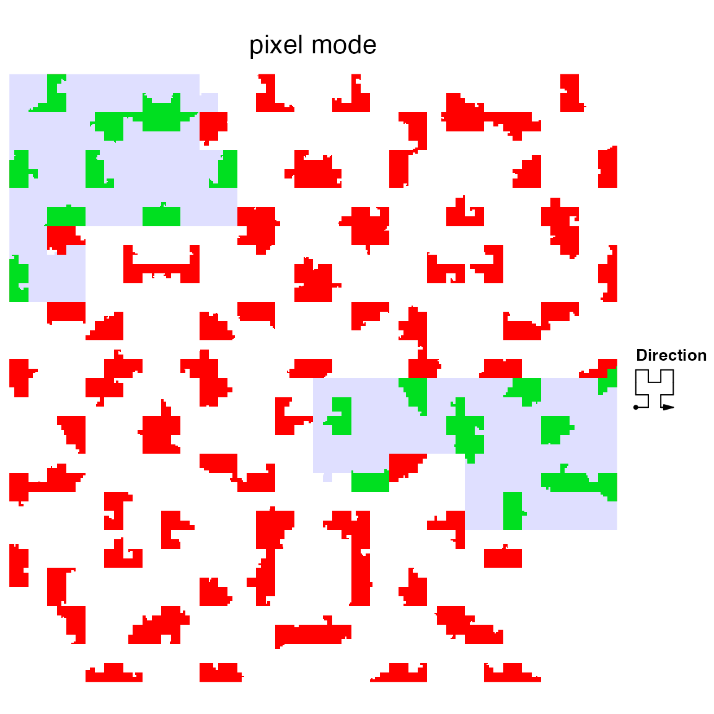
The self-defined overlay should accept seven arguments for which, r0, g0 and b0 correspond to RGB channles for the layers which are already added, r, g, b and alpha correspond to the layer which are going to be added. The elements of i.e. r0, g0, b0, r, g, b only correspond to the pixels that are covered by the intervals in the new layer, and overlay function is applied to every interval in the new layer iteratively.
For default_overlay(), if any of r0, g0, b0 has NA, the color from the new layer is only used. If any of r, g, b has NA, the color from the background is still used. The overlap of the two-layer colors are only calculated when there are no NA values in the colors.
The color overlay can also be applied to continuous colors. If the color mapping is generated by circlize::colorRamp2(), circlize::col2value() function can transform from colors back to the original values (it can be thought as the reversed function of colorRamp2()). Since the overlay function only provides color information, we can use col2value() to obtain back the original value and use colorRamp2() to generate a new set of colors.
In following plot, we change the color theme in the overlapped areas from “white-red” to “white-blue”. To do this, we first select the non-white pixels, transform back to the original values by col2value() and finally change to another color schema.
hc = HilbertCurve(1, 1000, level = 9, mode = "pixel", title = "pixel mode")
hc_layer(hc, x1 = x1, x2 = x2, mean_mode = "absolute", col = col_fun(value))
hc_layer(hc, x1 = c(300, 750), x2 = c(400, 850), col = "#00000010",
overlay = function(r0, g0, b0, r, g, b, alpha) {
# non-white pixels
l = !is_white(r0, g0, b0)
# these lines will be removed in the next version
if(!is.matrix(attr(col_fun, "colors"))) {
attr(col_fun, "colors") = t(col2rgb(attr(col_fun, "colors")))/255
}
# original value
v = col2value(r0[l], g0[l], b0[l], col_fun = col_fun)
# new color schema
col_fun_new = colorRamp2(c(0, 1), c("white", "blue"))
col_new = col_fun_new(v, return_rgb = TRUE)
r0[l] = col_new[, 1]
g0[l] = col_new[, 2]
b0[l] = col_new[, 3]
# overlay #00000010 to the background
default_overlay(r0, g0, b0, r, g, b, alpha)
})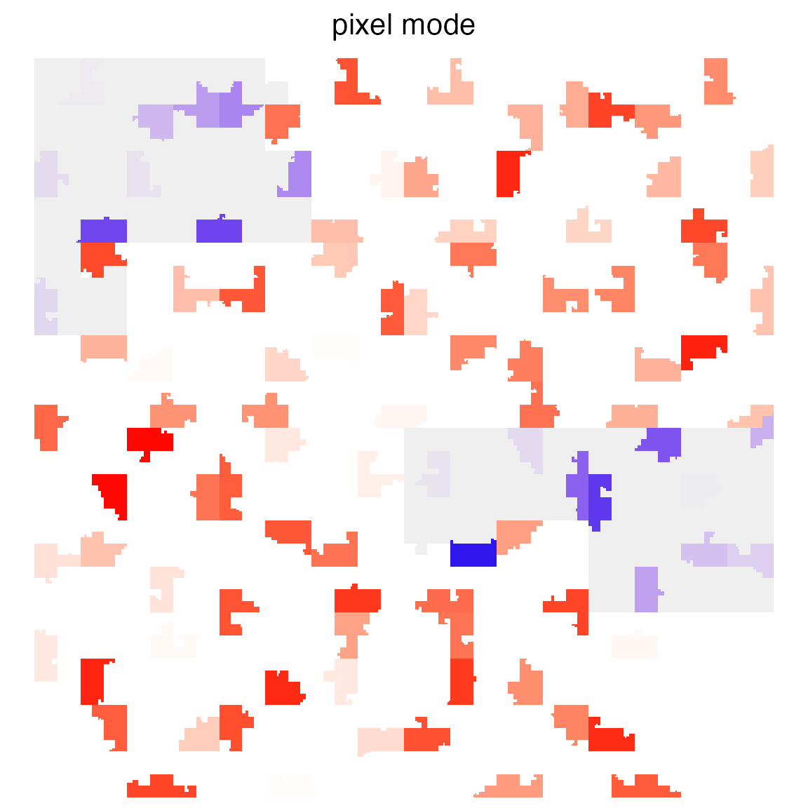
In above example, actually you can implement such overlay by first splitting the “red” regions into two parts by whether they overlap with the “grey” regions. Then add the not-overlapped regions, the “grey” regions, and overlapped regions as three independent layers.
hc_layer(red regions not ovelap with blue regions, use white-red color schema)
hc_layer(grey regions)
hc_layer(white-blue regions)
You can see the overlay option provides an easier and more straightforward way to do it.
In later section, we will demonstrate using self-defined overlay method can efficiently visualize the correspondance between H3K36me3 histone mark and gene body.
Add title and legends
Title can be set by the title argument in HilbertCurve(). Legend can be passed to legend argument in HilbertCurve() as a grob/ComplexHeatmap::Legends object or a list of these objects. Basically, colors are the main aesthetic mappings to values, thus, Legend() function in ComplexHeatmap package can be very helpful to create a legend. Also you can consider legendGrob() in grid package.
value = runif(length(ir))
col_fun = colorRamp2(c(0, 1), c("white", "red"))
legend1 = Legend(at = seq(0, 1, by = 0.2), col_fun = col_fun, title = "continuous")
legend2 = Legend(at = c("A", "B"), legend_gp = gpar(fill = c("#00FF0080", "#0000FF80")),
title = "discrete")
legend = list(legend1, legend2)
hc = HilbertCurve(1, 100, reference = TRUE, title = "points", legend = legend)
hc_points(hc, ir, np = 3, gp = gpar(fill = col_fun(value)))
hc_rect(hc, ir, gp = gpar(fill = sample(c("#00FF0020", "#0000FF20"), length(ir), replace = TRUE)))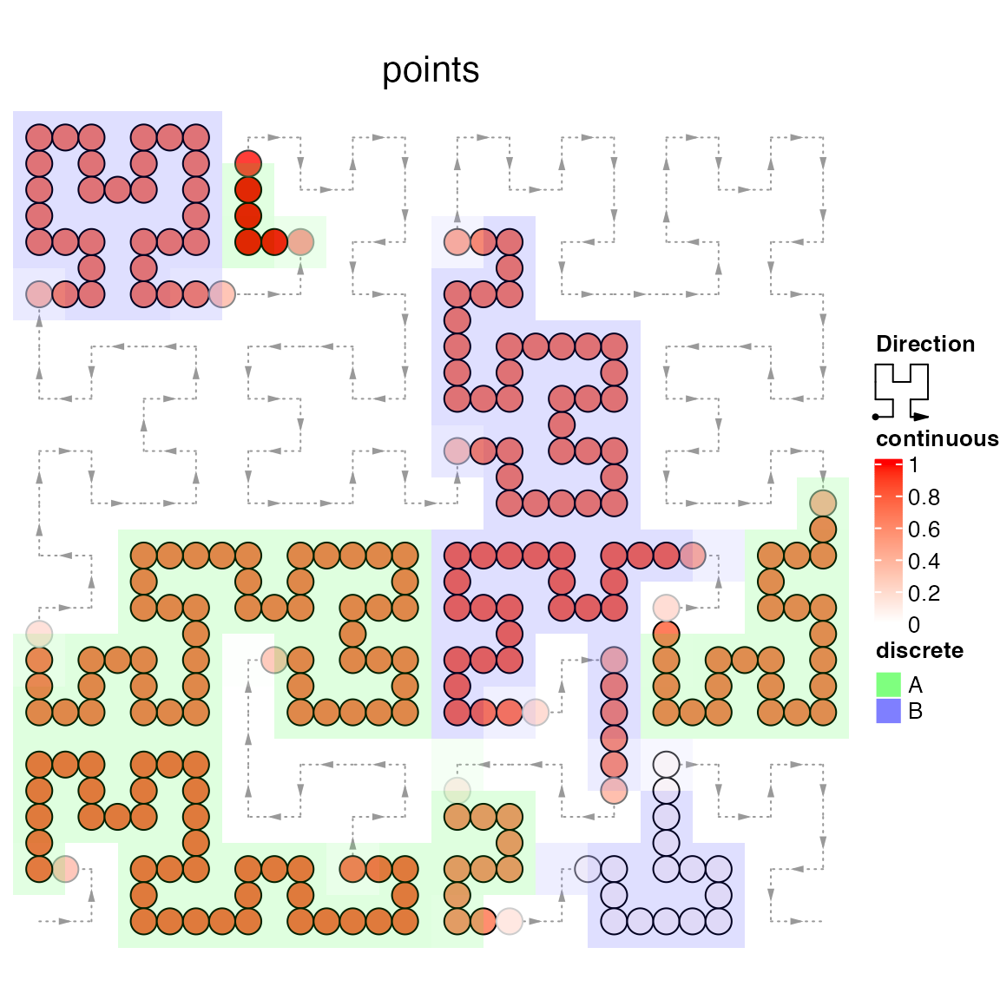
Under “pixel” mode, and when the curve is shown on the interactive device as raster image, title and legends can be added as well. But if the plot is exported by hc_png(), there will be not title and no legend.
col_fun = colorRamp2(c(-2, 0, 2), c("green", "white", "red"))
breaks = seq(-2, 2, by = 2)
lgd1 = Legend(at = breaks, col_fun = col_fun, title = "style 1")
lgd2 = Legend(at = rev(breaks), legend_gp = gpar(fill = col_fun(rev(breaks))), title = "style 2")
lgd3 = Legend(col_fun = col_fun, title = "style 3")
value = rnorm(length(x))
hc = HilbertCurve(1, 1000, level = 9, mode = "pixel", title = "pixel mode",
legend = list(lgd1, lgd2, lgd3))
hc_layer(hc, x1 = x, x2 = x+2, mean_mode = "absolute", col = col_fun(value))
Averaging models
Note: this “averaging” concept is very important. If you have unexpected plot, try other mean_mode option.
When using points or rectangles under “normal” mode, or using pixels under “pixel” mode, each point/rectangle/pixel corresponds to a small interval. When overlapping these intervals to the segments of Hilbert curve, and when the segment on the curve is not fully covered by the input intervals, proper averaging method should be applied to summarize the value in the corresponding segments.
Depending on different scenarios, HilbertCurve provides three metrics for averaging.
The overlapping model is illustrated in following plot. The red line in the bottom represents one segment on the Hilbert curve. Black lines on the top are the parts of input intervals that overlap with the segment. The thick lines indicate the intersected part between the input intervals and the segment.
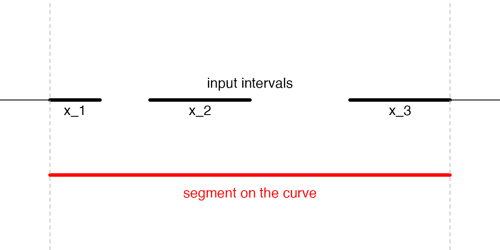
For a segment on the curve, \(n\) is the number of input intervals which overlap with the segment (it is 3 in the above plot), \(w_i\) is the width of the intersected segments (black thick lines), \(x_i\) is the value associated with the original intervals.
The “absolute” method which is denoted as \(v_a\) and is simple calculated as the mean regardless of the width:
\[ v_a = \frac{\sum_i^n{x_i}}{n} \]
The “weighted” method which is denoted as \(v_w\) is the mean weighted by the width of intersections:
\[ v_w = \frac{\sum_i^n{x_iw_i}}{\sum_i^n{w_i}} \]
“Absolute” and “weighted” mode should be applied when background information is not of interest. E.g. when summarizing mean methylation in a small segment, since methylation is only related with CpG sites while not other bases, non-CpG background should be ignored.
The “w0” mode is the weighted mean between the intersected parts and un-intersected parts:
\[ v_{w0} = \frac{v_wW + v_bW'}{W+W'} \]
for which \(W\) is sum of width of the intersected parts and \(W'\) is the sum of width for the un-intersected parts. \(V_b\) is the value corresponding to the background. E.g when averaging colors which are represented as numeric RGB values, the background value is set to 255 which corresponds to white.
There is one more value for mean_mode which is max_freq. max_freq is mainly for discrete signals and in a segment, value with the highest frequency (or with the highest length) is selected for this segment.
Examples
This section shows several interesting examples.
Visualize rainbow colors:
col = rainbow(100)
hc = HilbertCurve(1, 100, level = 5)
hc_points(hc, x1 = 1:99, x2 = 2:100, np = 3, gp = gpar(col = col, fill = col))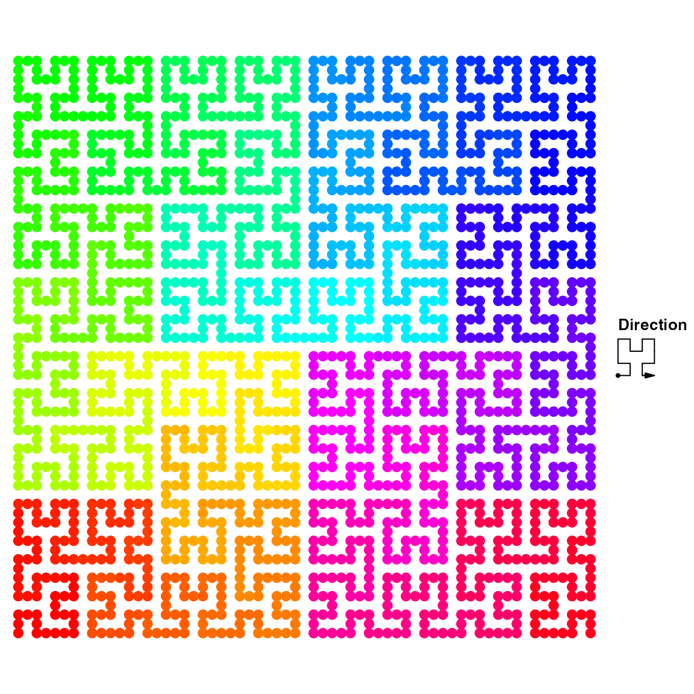
or use the rectangles:
hc = HilbertCurve(1, 100, level = 5)
hc_rect(hc, x1 = 1:99, x2 = 2:100, gp = gpar(col = col, fill = col))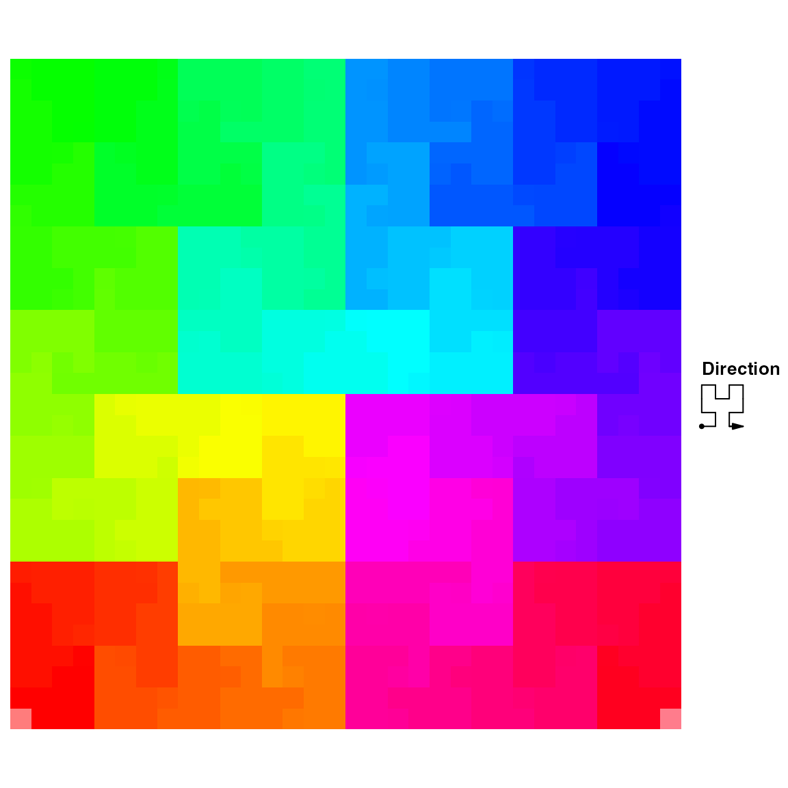
Reproduce the visualization for IPv4 address. The CIDR data is from http://www.iwik.org/ipcountry/.
library(ComplexHeatmap)
library(RColorBrewer)
load(system.file("extdata", "cidr_list.RData", package = "HilbertCurve"))
cidr_list = cidr_list[sapply(cidr_list, length) > 0]
country = rep(names(cidr_list), times = sapply(cidr_list, length))
ip = unlist(cidr_list, "r")
# convert ip address to numbers
mat = t(as.matrix(data.frame(lapply(strsplit(ip, "\\.|/"), as.numeric))))
start = mat[, 1]*256^3 + mat[, 2]*256^2 + mat[, 3]*256 + mat[, 4]
width = sapply(mat[, 5], function(x) strtoi(paste(rep(1, 32 - x), collapse = ""), base = 2))
# top 8 countries
col = structure(rep("grey", length(cidr_list)), names = names(cidr_list))
top8_rate = sort(tapply(width, country, sum), decreasing = TRUE)[1:8]/256^4
top8 = names(top8_rate)
col[top8] = brewer.pal(8, "Set1")
top8_rate = paste0(round(top8_rate*100), "%")
# this is the part of using HilbertCurve package
lgd = Legend(at = c(top8, "Others"), labels = c(paste(top8, top8_rate), "Others"),
legend_gp = gpar(fill = c(col[top8], "grey")), title = "Top8 contries")
hc = HilbertCurve(0, 256^4, start_from = "topleft", first_seg = "horizontal",
mode = "pixel", level = 9, legend = lgd)
hc_layer(hc, x1 = start, x2 = start + width, col = col[country])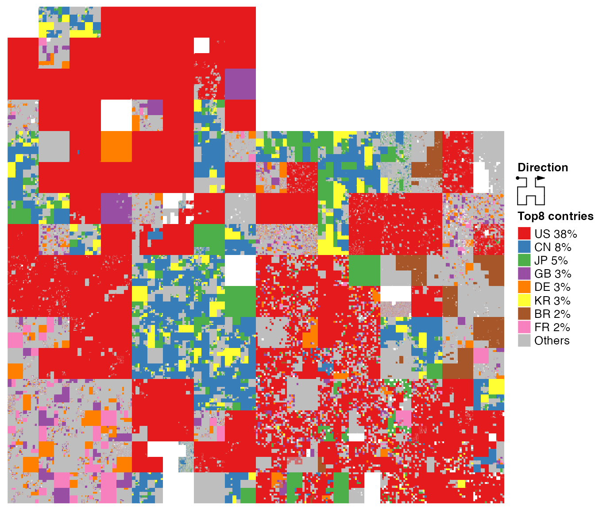
Duration of Chinese dynasties. Data from http://www.360doc.com/content/11/1123/02/7829717_166641336.shtml.
load(system.file("extdata", "chinese_dynasty.RData", package = "HilbertCurve"))
detect_os = function() {
if (grepl('w|W', .Platform$OS.type)) {
os = "Windows"
} else {
if (grepl('darwin', version$os)) {
os = "MacOS"
} else {
os = "Linux"
}
}
return(os)
}
# default font family for Chinese under different OS
fontfamily = switch(detect_os(),
Windows = "SimSun",
MacOS = "Songti SC",
Linux = "Songti SC")
hc = HilbertCurve(min(chinese_dynasty[[2]]), max(chinese_dynasty[[3]]),
title = "Chinese dynasty (1122 B.C. ~ 1911 A.D.)",
title_gp = gpar(fontsize = 16, fontfamily = fontfamily))
hc_segments(hc, x1 = chinese_dynasty[[2]], x2 = chinese_dynasty[[3]],
gp = gpar(col = rand_color(nrow(chinese_dynasty), transparency = 0.2),
lwd = runif(nrow(chinese_dynasty), min = 1, max = 10)))
hc_text(hc, x1 = chinese_dynasty[[2]], x2 = chinese_dynasty[[3]], labels = chinese_dynasty[[1]],
gp = gpar(fontsize = (chinese_dynasty[[3]] - chinese_dynasty[[2]])/500 * 10 + 8,
fontfamily = fontfamily))
year = seq(-1000, 2000, by = 100)
hc_text(hc, x1 = year, labels = ifelse(year < 0, paste0(-year, "BC"), year),
gp = gpar(fontsize = 8))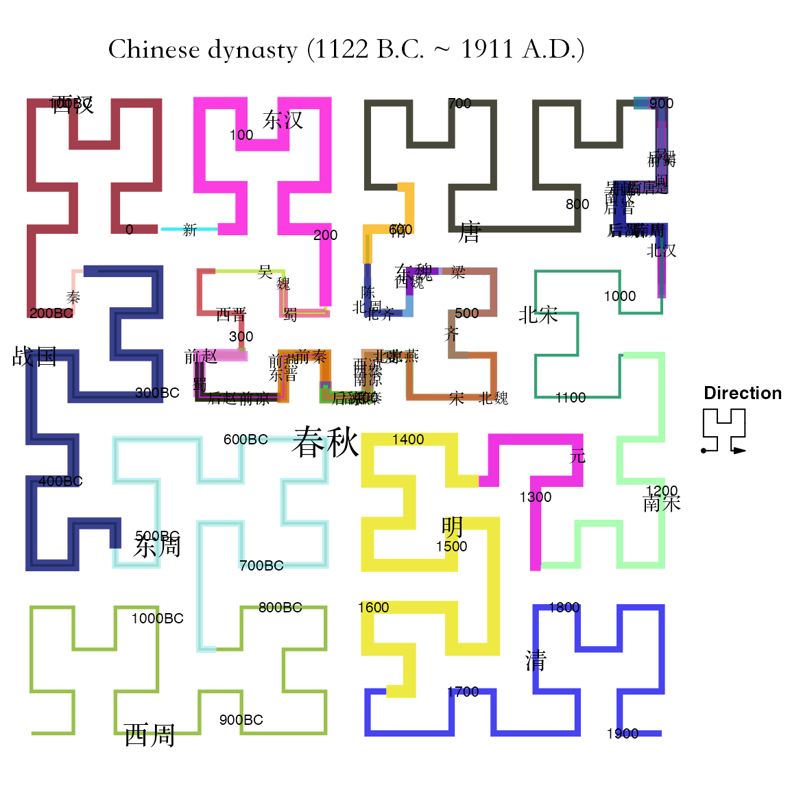
Session info
## R version 4.3.3 (2024-02-29)
## Platform: x86_64-apple-darwin20 (64-bit)
## Running under: macOS Sonoma 14.6.1
##
## Matrix products: default
## BLAS: /Library/Frameworks/R.framework/Versions/4.3-x86_64/Resources/lib/libRblas.0.dylib
## LAPACK: /Library/Frameworks/R.framework/Versions/4.3-x86_64/Resources/lib/libRlapack.dylib; LAPACK version 3.11.0
##
## locale:
## [1] en_GB.UTF-8/en_GB.UTF-8/en_GB.UTF-8/C/en_GB.UTF-8/en_GB.UTF-8
##
## time zone: Europe/Berlin
## tzcode source: internal
##
## attached base packages:
## [1] stats4 grid stats graphics grDevices utils datasets methods base
##
## other attached packages:
## [1] RColorBrewer_1.1-3 IRanges_2.36.0 S4Vectors_0.40.2 BiocGenerics_0.48.1
## [5] ComplexHeatmap_2.18.0 HilbertVis_1.58.0 lattice_0.22-5 circlize_0.4.16
## [9] HilbertCurve_1.99.0 knitr_1.45 markdown_1.12
##
## loaded via a namespace (and not attached):
## [1] shape_1.4.6.1 rjson_0.2.21 xfun_0.43 bslib_0.7.0
## [5] htmlwidgets_1.6.4 GlobalOptions_0.1.2 Cairo_1.6-2 vctrs_0.6.5
## [9] tools_4.3.3 bitops_1.0-7 parallel_4.3.3 highr_0.10
## [13] cluster_2.1.6 polylabelr_0.2.0 desc_1.4.3 lifecycle_1.0.4
## [17] GenomeInfoDbData_1.2.10 compiler_4.3.3 textshaping_0.3.7 codetools_0.2-19
## [21] clue_0.3-65 GenomeInfoDb_1.36.4 htmltools_0.5.8.1 sass_0.4.9
## [25] RCurl_1.98-1.14 yaml_2.3.8 pkgdown_2.0.9 crayon_1.5.2
## [29] jquerylib_0.1.4 cachem_1.0.8 magick_2.8.3 iterators_1.0.14
## [33] foreach_1.5.2 digest_0.6.35 purrr_1.0.2 fastmap_1.1.1
## [37] colorspace_2.1-0 cli_3.6.2 magrittr_2.0.3 rmarkdown_2.26
## [41] XVector_0.40.0 matrixStats_1.3.0 ragg_1.3.1 png_0.1-8
## [45] GetoptLong_1.0.5 memoise_2.0.1 evaluate_0.23 GenomicRanges_1.52.1
## [49] doParallel_1.0.17 rlang_1.1.3 Rcpp_1.0.12 jsonlite_1.8.8
## [53] R6_2.5.1 systemfonts_1.0.6 fs_1.6.4 zlibbioc_1.46.0